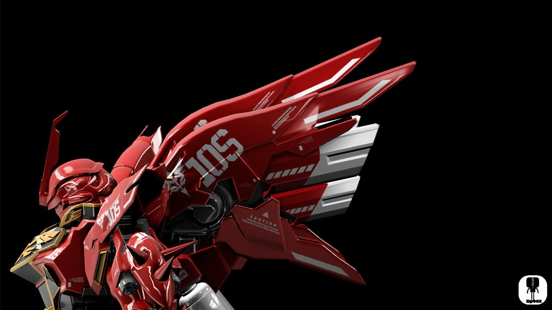
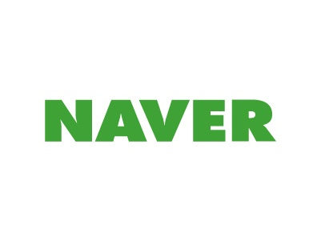

AboutMe
Home
Aboutme

About Me..
Personal Information
-Name: Minjune Hwang
E-mail Address: 7sakiai7@gmail.com
Education
Banpo Middle School - Seoul High School (with scholarship) - St.Francis High School
Junior year of St.Francis High School (Class of 2017)
Experience
KIST Brain Science Institute, Center of Neuroscience Summer Camp & Internship (July 10 - July 31, 2015)
Accomplishment
Distinguished Honor Roll (Top 1%) in AMC (American Math Competition)
Qualification to AIME (American Invitational Mathematics Examination)
2nd place in NMSC, Southern California (mathematics)
National Latin Exam Gold Medal (Latin I, Latin II)
Saint Francis High School Scholar Roll student
Activities
Assistant Manager & Cello part member of Valley Philharmonic Orchestra
Saint Francis High School Choir
National Honor Society member
Saint Francis High School Math Club, Robotics Club, Be a Big Brother Club.
